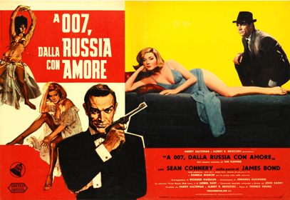
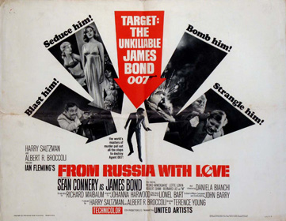
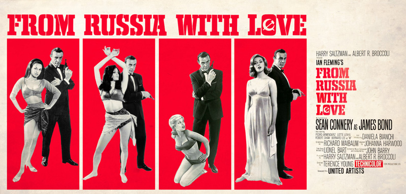

Albert R. Broccoli
Berkely Mather (uncredited)
Seeking to exact revenge on James Bond (007) for killing its agent Dr. No and destroying the organisation's assets in the Caribbean, the international criminal organisation SPECTRE begins training agents to kill Bond. Their star pupil is Donald "Red" Grant, an Irish assassin who proves his mettle by killing a Bond impostor in one minute and fifty-two seconds on a training course with a garrote wire concealed in his wristwatch.
Meanwhile, the organisation's Chief Planner, a Czech chess grandmaster named Kronsteen (Number 5), devises a plan to play British and Soviet intelligence against each other to procure a Lektor cryptographic device from the Soviets. SPECTRE's Chief Executive, Number 1, puts Rosa Klebb (Number 3), a former Colonel of SMERSH (the counter-intelligence branch of Soviet Intelligence) who has defected to SPECTRE in the West, in charge of the mission as Chief of Operations. Klebb chooses Grant to protect Bond until he acquires the Lektor and then to eliminate 007 and steal the cipher machine for SPECTRE. As part of the scheme, Klebb recruits the beautiful Tatiana Romanova, a cipher clerk at the Soviet consulate in Istanbul, who believes the ex-Colonel still to be working for SMERSH.
In London, M informs Bond that Romanova has contacted their "Station 'T'" in Turkey, claiming to have fallen in love with Bond from his file photo. She offers to defect to the West, and will bring a top secret Lektor with her to sweeten the deal but only on the condition that Bond handle her case, personally. Prior to his departure, Bond is supplied by Q with an attaché case containing a concealed throwing knife, gold sovereigns, a special tear gas booby trap connected to the lock mechanism and ammunition for an Armalite AR-7 folding sniper rifle with an infrared night scope.
After travelling to Istanbul, Bond heads into the city to meet with station head Ali Kerim Bey, tailed by Bulgarian secret agents working for the Russians. They are in turn tailed by Grant, who kills one of them after Bond is taken back to his hotel, stealing their car and dumping it outside the Soviet Consulate in order to provoke hostilities between British and Soviet Intelligence. In response, the Soviets bomb Kerim's office with a limpet mine, Kerim, however, is away from his desk for a tryst with his mistress. He and Bond then investigate the attack by spying on a Soviet consulate meeting through a periscope installed in the underground aqueducts beneath Istanbul. Thus, they learn that the Soviet agent Krilenku is responsible for the bombing. Kerim Bey declares it unwise to stay in the city under such circumstances and takes Bond to a rural gypsy settlement. However, Krilenku learns of this and promptly attacks a Gypsy feast, where Bond and Kerim are honoured guests, with a band of hired Bulgarian fighters. Much to Bond's confusion, he is saved from an enemy fighter during the attack by a distant sniper shot from Grant. The following night, Bond and Kerim Bey track Krilenku down to his hideout, where Kerim Bey kills him with Bond's rifle.
Upon returning to his hotel suite that night, Bond finds Romanova waiting for him in his bed and has sex with her; neither is aware that SPECTRE is filming them. The next day, Romanova heads off for a prearranged rendezvous at Hagia Sophia to drop off the floor plans for the consulate, with Grant ensuring Bond receives the plans by killing the other Bulgarian tail who attempts to intercept the drop. Using the plans, Bond and Kerim Bey successfully steal the Lektor and, together with Romanova, escape with the device onto the Orient Express. On the train, Kerim Bey quickly notices a Soviet security officer named Benz tailing them, prompting him and Bond to subdue him. When Bond leaves Benz and Kerim Bey alone together, Grant kills them and makes it appear as though they killed each other, preventing Bond from leaving the train with Romanova to rendezvous with one of Kerim's men.
At the railway station in Belgrade, Bond passes on word of Kerim Bey's death to one of his sons, and asks for an agent from Station Y to meet him at Zagreb. However, when the train arrives at the station, Grant intercepts Nash, sent from Station Y, killing the agent before posing as him. After drugging Romanova at dinner, Grant overpowers Bond before taunting him about SPECTRE's involvement in the theft. After disclosing that Romanova was unaware of what was truly going on, believing she was working for Russia, Grant reveals to Bond his plans to leave behind the film SPECTRE took of him and Romanova at the hotel, along with a forged blackmail letter, to make it appear that their deaths were the result of a murder-suicide, to scandalise the British intelligence community. Bond quickly convinces him to accept a bribe of gold sovereigns in exchange for a final cigarette, tricking Grant into setting off the booby trap in his attaché case. This distracts Grant enough for Bond to attack him in brutal hand-to-hand combat. In the ensuing fight, Bond narrowly gains the upper hand, stabbing Grant with the case's concealed knife before strangling him with his own garrotte. Bond then drags the comatose Romanova from the train, which has been stopped by a SPECTRE accomplice, where he hijacks Grant's getaway truck and flees the scene with Romanova.
Upon hearing the news of Grant's death, Number 1 calls Klebb and Kronsteen onto the carpet to explain what went wrong and remind them that SPECTRE does not tolerate failure. Kronsteen is executed by the henchman Morzeny with a kick from the poison-tipped switchblade in his shoe. Klebb, however, is given one last chance to make good on the mission and acquire the Lektor (which has already been promised to the Russians in a sell-back scheme).
The next morning, Bond's stolen truck is intercepted along its escape route by a SPECTRE helicopter, but 007 destroys the attacking aircraft by shooting its co-pilot with his sniper rifle, causing the man to drop a live hand grenade in the cockpit. Thus, Bond and Romanova make it to Grant's escape boat on the Dalmatian coast and steal that, too, only to be pursued by Morzeny, who leads a squadron of SPECTRE powerboats. Bond, however, escapes by dumping his own powerboat's fuel drums overboard and detonating them with a Very flare to engulf all the chase boats in a sea of flames.
Eventually, he and Romanova reach a hotel in Venice, where they believe themselves to be safe. Klebb, however, disguised as a maid, makes one final attempt on Bond and the Lektor. Klebb tries to kick him with a poisoned switchblade shoe, but Romanova shoots her with her own dropped gun. With the mission accomplished, Bond and Romanova leave Venice on a romantic boat ride, in which course Bond throws Grant's blackmail film into the canal.
Although uncredited, the actor who played Number 1 was Anthony Dawson, who had played Professor Dent in the previous Bond film, Dr. No and appeared in several of Terence Young's films. In the end credits, Blofeld is credited with a question mark. Blofeld's lines were redubbed by Viennese actor Eric Pohlmann in the final cut. Peter Burton was unavailable to return as Major Boothroyd, so Desmond Llewelyn, a Welsh actor who was a fan of the Bond comic strip published in the Daily Express, accepted the part. However, screen credit for Llewelyn was omitted at the opening of the film and is reserved for the exit credits, where he is credited simply as "Boothroyd". Llewelyn's character is not referred to by this name in dialogue, but "M" does introduce him as being from Q Branch. Llewelyn remained as the character, better known as "Q", in all but one of the series' films until his death in 1999.
Several actresses were considered for the role of Tatiana, including Italians Sylva Koscina and Virna Lisi, Danish actress Annette Vadim, and English-born Tania Mallet. 1960 Miss Universe runner-up Daniela Bianchi was ultimately cast, supposedly Sean Connery's choice. Bianchi started taking English classes for the role, but the producers ultimately chose to have her lines redubbed by British stage actress Barbara Jefford in the final cut. The scene in which Bond finds Tatiana in his hotel bed was used for Bianchi's screen test, with Dawson standing in, this time, as Bond. The scene later became the traditional screen test scene for prospective James Bond actors and Bond Girls.
Greek actress Katina Paxinou was originally considered for the role of Rosa Klebb, but was unavailable. Terence Young cast Austrian singer Lotte Lenya after hearing one of her musical recordings. Young wanted Kronsteen's portrayer to be "an actor with a remarkable face", so the minor character would be well remembered by audiences. This led to the casting of Vladek Sheybal, whom Young also considered convincing as an intellectual. Several women were tested for the roles of Vida and Zora, the two fighting Gypsy girls, and after Aliza Gur and Martine Beswick were cast, they spent six weeks practising their fight choreography with stunt work arranger Peter Perkins. Beswick was mis-credited as 'Martin Beswick' in the films opening titles, but this small error was fixed for the 2001 DVD release.
Mexican actor Pedro Armendáriz was recommended to Young by director John Ford to play Kerim Bey. After experiencing increasing discomfort on location in Istanbul, Armendáriz was diagnosed with inoperable cancer. Filming in Istanbul was terminated, the production moved to Britain, and Armendáriz's scenes were brought forward so that he could complete his scenes without delay. Though visibly in pain, he continued working as long as possible. When he could no longer work, he returned home and took his own life. Remaining shots after Armendáriz left London had a stunt double and Terence Young himself as stand-ins.
Following the financial success of Dr. No, United Artists greenlit a second James Bond film. The studio doubled the budget offered to Eon Productions with $2 million, and also approved a bonus for Sean Connery, who would receive $100,000 along with his $54,000 salary. As President John F. Kennedy had named Fleming's novel From Russia with Love among his ten favourite books of all time in Life magazine, producers Broccoli and Saltzman chose this as the follow-up to Bond's cinematic debut in Dr. No. From Russia with Love was the last film President Kennedy saw at the White House on 20 November 1963 before going to Dallas. Most of the crew from the first film returned, with major exceptions being production designer Ken Adam, who went to work on Stanley Kubrick's Dr. Strangelove and was replaced by Dr. No's art director Syd Cain; title designer Maurice Binder was replaced by Robert Brownjohn, and stunt coordinator Bob Simmons was unavailable and was replaced by Peter Perkins though Simmons performed stunts in the film. John Barry replaced Monty Norman as composer of the soundtrack.
The film introduced several conventions which would become essential elements of the series: a pre-title sequence, the Blofeld character (referred to in the film only as "Number 1"), a secret-weapon gadget for Bond, a helicopter sequence (repeated in every subsequent Bond film except The Man with the Golden Gun), a postscript action scene after the main climax, a theme song with lyrics, and the line "James Bond will return/be back" in the credits.
Most of the film was set in Istanbul, Turkey. Locations included the Basilica Cistern, Hagia Sophia and the Sirkeci railway station, which also was used for the Belgrade and Zagreb railway stations. The MI6 office in London, SPECTRE Island, the Venice hotel and the interior scenes of the Orient Express were filmed at Pinewood Studios with some footage of the train. In the film, the train journey was set in Eastern Europe. The journey and the truck ride were shot in Argyll, Scotland and Switzerland. The end scenes for the film were shot in Venice. However, to qualify for the British film funding of the time, at least 70 percent of the film had to have been filmed in Great Britain or the Commonwealth. The Gypsy camp was also to be filmed in an actual camp in Topkapi, but was actually shot in a replica of it in Pinewood. The scene with rats (after the theft of the Lektor) was shot in Spain, as Britain did not allow filming with wild rats, and an attempt to film white rats painted in cocoa in Turkey did not work. Principal photography began on 1 April 1963 and wrapped on 23 August. Ian Fleming spent a week in the Istanbul shoot, supervising production and touring the city with the producers.
Director Terence Young's eye for realism was evident throughout production. For the opening chess match, Kronsteen wins the game with a reenactment of Boris Spassky's victory over David Bronstein in 1960. Production Designer Syd Cain built up the "chess pawn" motif in his $150,000 set for the brief sequence. Cain also later added a promotion to another movie Eon was producing, making Kirilenko's death happen inside a billboard for Call Me Bwana. A noteworthy gadget featured was the attaché case (briefcase) issued by Q Branch. It had a tear gas bomb that detonated if the case was improperly opened, a folding AR-7 sniper rifle with twenty rounds of ammunition, a throwing knife, and 50 gold sovereigns. A boxer at Cambridge, Young choreographed the fight between Grant and Bond along with stunt coordinator Peter Perkins. The scene took three weeks to film and was violent enough to worry some on the production. Robert Shaw and Connery did most of the stunts themselves.
After the unexpected loss of Armendáriz, production proceeded, experiencing complications from uncredited rewrites by Berkely Mather during filming. Editor Peter Hunt set about editing the film while key elements were still to be filmed, helping to restructure the opening scenes. Hunt and Young came up with the idea of moving the Red Grant training sequence to the beginning of the film (prior to the main title), a signature feature that has been an enduring hallmark of every Bond film since. The briefing with Blofeld was rewritten, and back projection was used to refilm Lotte Lenya's lines.
Behind schedule and over-budget, the production crew struggled to complete production in time for the already-announced premiere date that October. On 6 July 1963, while scouting locations in Argyll, Scotland for that day's filming of the climactic boat chase, Terence Young's helicopter crashed into the water with art director Michael White and a cameraman aboard. The craft sank into 40–50 feet (12–15 m) of water, but all escaped with minor injuries. Despite the calamity, Young was behind the camera for the full day's work. A few days later, Bianchi's driver fell asleep during the commute to a 6am shoot and crashed the car. The actress's face was bruised and Bianchi's scenes had to be delayed for two weeks while the facial contusions healed.
The helicopter and boat chase scenes were not in the original novel but were added to create an action climax. The former was inspired by the crop-dusting scene in Hitchcock's North by Northwest and the latter by a previous Young/Broccoli/Maibaum collaboration, The Red Beret. These two scenes would initially be shot in Istanbul but were moved to Scotland. The speedboats could not go fast enough due to the many waves in the sea and a rented boat filled with cameras ended up sinking in the Bosphorus. A helicopter was also hard to obtain, and the special effects crew were nearly arrested trying to get one at a local airbase. The helicopter chase was filmed with a radio controlled miniature helicopter. The sounds of the boat chase were replaced in post-production since the boats were not loud enough, and the explosion, shot in Pinewood, got out of control, burning actor Walter Gotell's eyelids and seriously injuring three stuntmen.
Photographer David Hurn was commissioned by the producers of the James Bond films to shoot a series of stills with Sean Connery and the actresses of the film. When the theatrical property Walther PPK pistol did not arrive, Hurn volunteered the use of his own Walther LP-53 air pistol. Though the photographs of the "James Bond is Back" posters of the US release airbrushed out the long barrel of the pistol, film poster artist Renato Fratini used the long-barrelled pistol for his drawings of Connery on the British posters.
For the opening credits, Maurice Binder had disagreements with the producers and did not want to return. Designer Robert Brownjohn stepped into his place, and projected the credits on female dancers, inspired by constructivist artist László Moholy-Nagy projecting light onto clouds in the 1920s. Brownjohn's work started the tradition of scantily clad women in the Bond films' title sequences.


